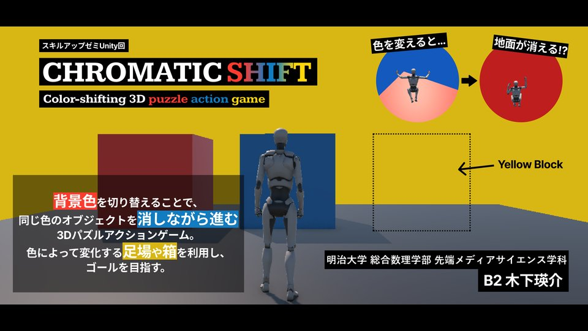
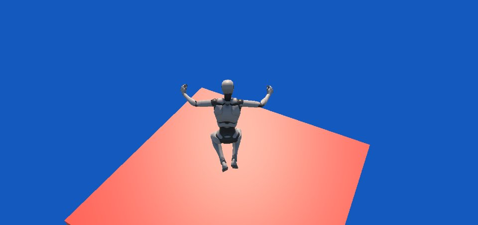
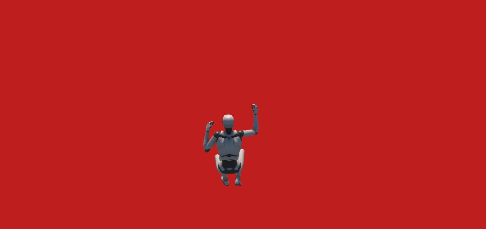

Work 03 / 10
背景色を切り替えて足場や箱を消しながら進む3Dパズルアクション

世界の背景色を3色の中から自由に切り替えられる3Dパズルアクションゲームです。
背景色と同じ色のオブジェクトは背景に同化して消え、違う色のオブジェクトや障害物だけが残ります。プレイヤーは背景色を切り替えながら、三人称視点でキャラクターを操作してゴールを目指します。
ステージは2つあり、第1ステージは足場を渡っていくアスレチック、第2ステージは色の仕組みを使って解く謎解きです。「背景と同じ色は消える」というひとつのルールから、アクションと謎解きの両方を生み出せるゲームの多様性が、この作品でいちばん自信のあるところです。
アイデアの起点は、海外のゲーム「HUE」です。
背景の色を変えて、ゴールを目指す
ルールは下の「ルールと世界観」へ ↓
背景の色を選ぶ
背景の色を選んで走らせる（走っている間も変えられる）

